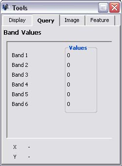
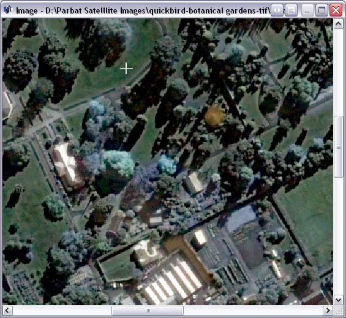
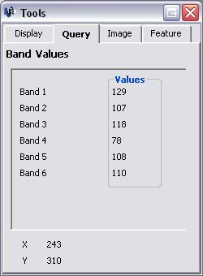

An image must first be loaded. See loading an image
If the Image Window is not already visible, click on the 'Window' menu followed by 'Image'.

Click on the 'Query' tab within the Tools Window.

Move the cursor to the Image window and hover above a pixel.

The Query Tab will now display data relating to that pixel. The displayed data includes the value of each band (0 - 255) and the x,y coordinates of the pixel (0,0 being the top left).
